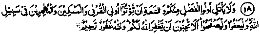
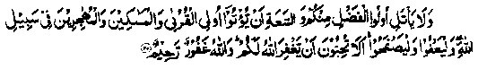

Chapter One · Section (a): Ayaat on the virtues of spending for the cause of Allah
6. Abu Bakr (Radhiallaho anho) vow to stop aiding a relative

18. And let not those who possess dignity and ease among you, swear not to give to near of kin and to the needy, and to fugitives for the cause of Allah. Let them forgive and show indulgence. Do you not yearn that Allah may forgive you? Allah is forgiving, merciful. (An-Noor: 22)
Note: In the battle of Bani Mustaliq in the sixth year of Hijrah, Aishah Radhiallaho anha accompanied Rasulullah Sallallaho alaihe wasallam. She had a separate camel to ride. A litter was fitted on it for her; she stayed in the litter most of the time. Before moving, a few men would lift the litter and tie it on the back of the camel. She was very light in weight, so much so that the men lifting the litter would not feel the weight of a very light young lady. As usual, the caravan stopped at a certain place for the night. Just before the time of departure early next morning, the litter carriers came and tied it on the back of the camel, while Aishah Radhiallaho anha had gone out to ease herself. When she returned, she found that the necklace which she wore was missing. She went back to the spot, where she had been, to look for it. Meanwhile the caravan left the camping site, assuming that Aishah Radhiallaho anha was occupying the litter. She was left alone in the wilderness. She felt that Rasulullah Sallallaho alaihe wasallam would notice her absence on the way and someone would be sent back to the site to look for her. She sat down on that very spot where her camel-litter had been put. Feeling tired she went to sleep, with composure of mind which was a Divine gift to the blessed people of that period; whereas a woman of today, left alone in the wilderness in darkness, would be so frightened that instead of going to sleep she would keep crying and wailing, till morning.
Safwan Ibne Mu'attal Radhiallaho anho, a venerable Sahabi who always travelled well behind the caravan for picking up anything left or dropped behind, came to the spot where Aishah Radhiallaho anha was sleeping, and noticed a person lying on the ground. When he came closer, he recognised Aishah Radhiallaho anha whom he had seen before the Ayat about ‘Pardah’ (veil) was revealed. He loudly recited:
Thereupon she woke up and covered her face. He made his camel sit down and she mounted it He then led the camel by its nose-string and overtook the caravan. Abdullah Ibne Ubayye, the leader of the hypocrites and a deadly enemy of the Muslims, seized this chance of slander mongering and making e scandal. He gave wide publicity to this incident. Some of the simple-minded Muslims also joined in this rumour. Imagine the Majesty and Might of Allah Ta'ala, this kept circulating for a month and no Ayat was revealed to prove the innocence of Aishah Radhiallaho anha. Rasulullah Sallallaho alaihe wasallam and all the Muslims were distressed due to that incident. Obviously, it was a severe shock. Rasulullah Sallallaho alaihe wasallam consulted a number of men and women and made inquiries about it, but no satisfactory solution was forthcoming until, after one month, a whole "Ruku’ of Surah an-Noor was revealed indicating the innocence of Aishah Radhiallaho anha and containing severe reprimand of Allah Ta'ala for those who circulated the slander without any basis.' One of such persons was Mistah Radhiallaho anho, a Sahabi, who was related to and was looked after by Abu Bakr Radhiallaho anho. Abu Bakr Radhiallaho anho was much grieved over the participation of that Sahabi in spreading the false allegation and, in that grief, he swore that he would no longer help Mistah Radhiallaho anho; therefore, the above Ayaat were revealed. It appears that beside Abu Bakr Radhiallaho anho some other Sahabah also had withdrawn their helping hand from certain persons who had indulged in the gossip. Aishah Radhiallaho anha says that Mistah had actively participated in this, in spite of being a relative of Abu Bakr. Mistah was dependent on the financial support of Abu Bakr Radhiallaho anho and, when the innocence of Aishah Radhiallaho anha was established, Abu Bakr swore not to help Mistah. Thereupon the Ayat was revealed:

after which, Abu Bakr Radhiallaho anho renewed the help. Another Hadith says that, after the above Ayat was revealed, Abu Bakr Radhiallaho anho doubled the allowance of Mistah Radhi-allaho anho. Still another Hadith says that there were two orphans whom Abu Bakr Radhiallaho anho used to support, one of whom was Mistah; Abu Bakr Radhiallaho anho had stopped maintenance for both of them, by taking the oath. Ibne Abbas Radhiallaho anho has said that there were several Sahabah who took part in the false allegation against Aishah Radhiallaho anha and for that a large number of Sahabah including Abu Bakr Radhiallaho anho had sworn not to give help or spend on the participants of that ugly episode. Thereupon the Ayat referred to above was revealed, saying that those who are men of means should not forswear helping their near relations and should spend as they were doing before. (Dune Manthur). How great was the forbearance shown by Abu Bakr Radhiallaho anho whose daughter’s chastity was the subject of false allegations and yet he kept helping the slanderer and gave twice as much as he did before!